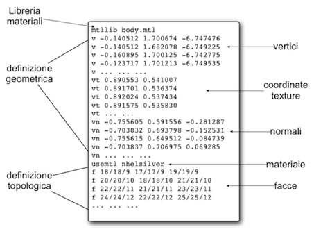
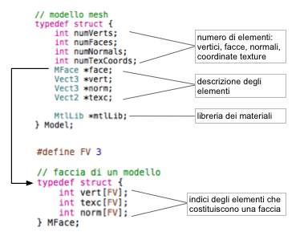

Gli unici elementi della scena che vengono disegnati in modo diretto sono la skybox per il cielo e il terreno. Tutti i restanti oggetti vengono renderizzati caricando una loro rappresentazione da file. Il formato scelto per la memorizzazione della struttura mesh è la specifica .obj.
Tale formato è sostanzialmente organizzato come segue:
Una
prima sezione del documento è dedicata alla definizione geometrica
del modello, ovvero della posizione nello spazio 3D dei vertici che
lo compongono, incluse le normali alle facce (descritte di
seguito).
Ogni linea del file descrive un singolo elemento (o
parametro) della struttura:
Dopo aver specificato le posizioni spaziali dei diversi elementi, il formato procede a una loro definizione topologica, quindi spiega come questi si compongono tra loro per formare le facce della mesh tridimensionale.
Questa fase definisce ogni
singola faccia attraverso il carattere f seguito
da una tripletta di vettori contenenti tre o due indici numerici
separati da slash /. Ogni vettore specifica rispettivamente un
vertice, una coordinata texture e una normale per mezzo di indici
interi. Con tre di questi vettori è possibile definire senza
ambiguità la conformazione di una faccia triangolare.
NB: il
formato obj supporta delle generiche facce poligonali tuttavia, per
semplicità, nel codice vengono accettate soltanto modelli
triangolarizzati. In caso di modelli che non hanno una texture
associata, il secondo indice numerico di ogni tripletta viene omesso.
Oltre alla sua struttura geometrica, il formato permette anche di specificare una libreria di materiali (vedi dopo) per il modello, ovvero le caratteristiche di colore ambientale, diffuso, speculare (e moltissimi altri parametri) per ogni faccia della mesh. A tale scopo il documento .obj può iniziare con la frase mtllib seguita dal nome del file .mtl che contiene la descrizione dei vari materiali (ogni materiale è identificato da una stringa di caratteri: ovvero il suo nome). Durante la definizione topologica del modello è possibile fare riferimento a un materiale da applicare alle facce che verranno descritte da quel punto in poi per mezzo del termine usemtl seguito dal nome del materiale desiderato.
Per poter gestire un modello tridimensionale è necessario prevedere una adeguata struttura dati che contenga e organizzi le informazioni necessarie al suo utilizzo. La struttura Model utilizzata per questo scopo è descritta in model.h ed è organizzata come segue:
Si sottolinea come la struttura Model sia focalizzata esclusivamente alla memorizzazione di un modello in vista di una sua semplice resa grafica e non sia affatto pensata per un suo editing o per funzionalità di modellazione.
La lettura di un file .obj viene affrontata nella funzione loadModelFromOBJ(). Questa corposa procedura è suddivisa concettualmente in due passi:
La funzione destroyModel() si preoccupa di liberare tutte le risorse occupate da un modello e dai materiali associati.
La
resa grafica di una struttura Model
è
realizzata nella procedura renderModel()
e
risulta un'operazione piuttosto semplice. Lo sforzo maggiore è
infatti quello di gestire i diversi materiali associati alle facce e
la maggior parte del codice di questa funzione è dedicato a questo
scopo ed è descritto in un'apposita sezione.
Il rendering di un
modello è ottenuto per mezzo di un unico grande ciclo, con tante
iterazioni tante quante sono le facce presenti nella struttura dati.
Per ciascuna faccia è infatti necessario fornire – attraverso
adeguate chiamate opengl – la posizione dei tre vertici che la
compongono (si utilizzano GL_TRIANGLES) e per ogni vertice si
specificano la normale e le eventuali coordinate texture associate.